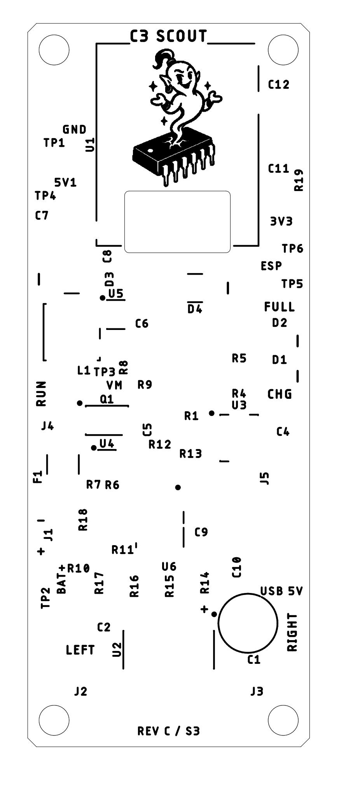
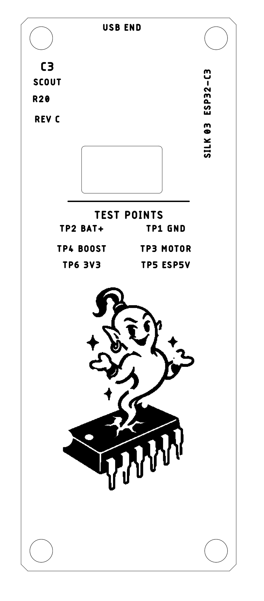

Read the board
at a glance.
Your IC Genie artwork on both faces: the compact 15.6 mm mascot is on the top silkscreen beneath the ESP module, and the 30 mm mascot remains underneath below the test-point legend. The updated silkscreen is saved in Fusion; the circuit and component positions are unchanged.




Assemble with confidence
Solid dots mark pin 1 on the six IC packages. Cathode bars follow the actual schematic mapping: LED pad 2 and rectifier pad 1. Battery and electrolytic polarity are explicit.
Legible after assembly
References sit outside component bodies where space allows. R20 remains beneath its component. C3, R2 and R3 are retained on non-printing assembly layer 52, keeping the lower artwork clear. All 56 references remain attached to their components.
A consistent identity
The supplied IC Genie is converted to native silkscreen strokes. The small top-side mascot sits between the ESP header pads and is covered by the installed module. The large underside mascot stays below the test-point legend. The small top logo has no flagged pad-clearance location; the underside logo now clears exposed pads after tenting the routing vias, as documented in the corrected manufacturing review.
Text remains at least 1.0 mm high with 0.20 mm strokes. The small and large mascots use 0.15 mm and 0.18 mm native strokes, respectively, meeting JLCPCB's published minimum stroke. This remains a prototype design; the existing electrical and mechanical validation work is unchanged.